Обучение и навыки
Тренинги, курсы и практические программы для женщин, молодёжи и специалистов.
Смотреть проекты →Мы реализуем проекты по обучению, занятости, здравоохранению сельскому хозяйству, экологии и развитию предпринимательства.
Тренинги, курсы и практические программы для женщин, молодёжи и специалистов.
Смотреть проекты →FFS/демо-участки, цепочки добавленной стоимости, поддержка фермеров и агродилеров.
Смотреть проекты →Центры услуг и инициативы для уязвимых групп и пожилых людей.
Смотреть проекты →Стартап-программы, буткемпы, консультации и сопровождение бизнес-идей.
Смотреть проекты →ОО/НПО «Бонувони Хатлон» — общественная организация, работающая в Хатлонской области, Согдийской области и РРП. Мы внедряем практические решения на местах и развиваем потенциал сообществ.
Поддержка людей и сообществ через образование, занятость и устойчивое развитие.
Обучение, мобилизация, демонстрации, коммуникационные кампании, мониторинг и оценка.
Женщины, молодёжь, фермеры, уязвимые группы, местные лидеры и сообщества.
Слайды с кратким описанием.
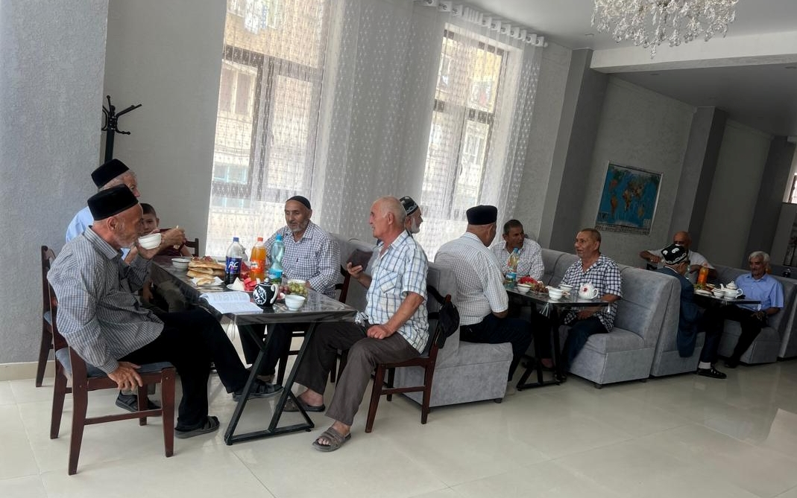
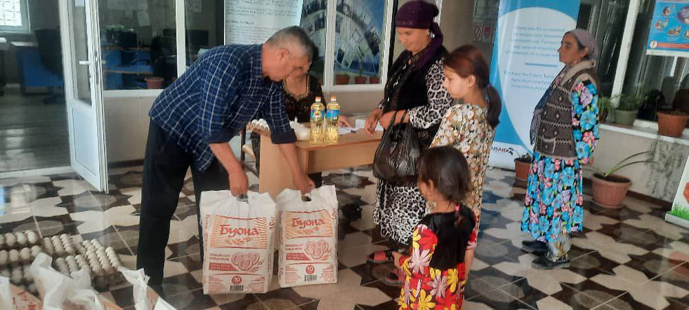
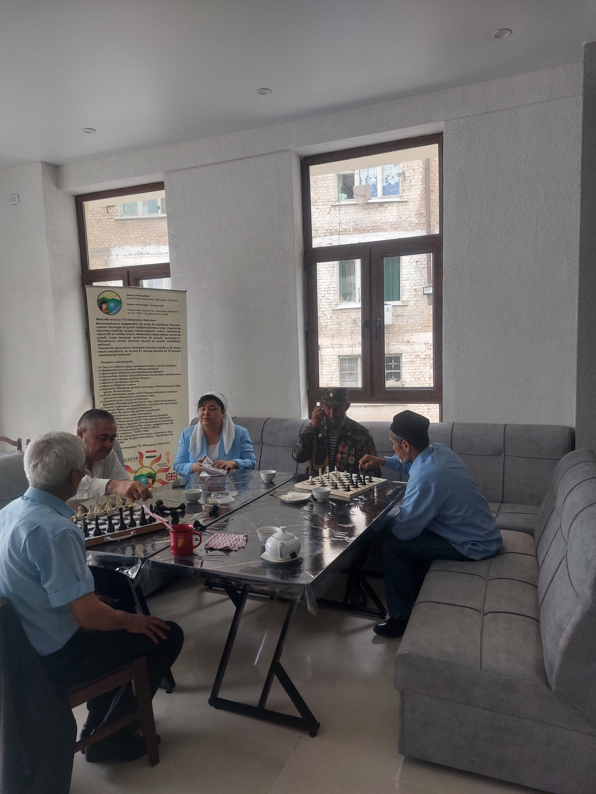
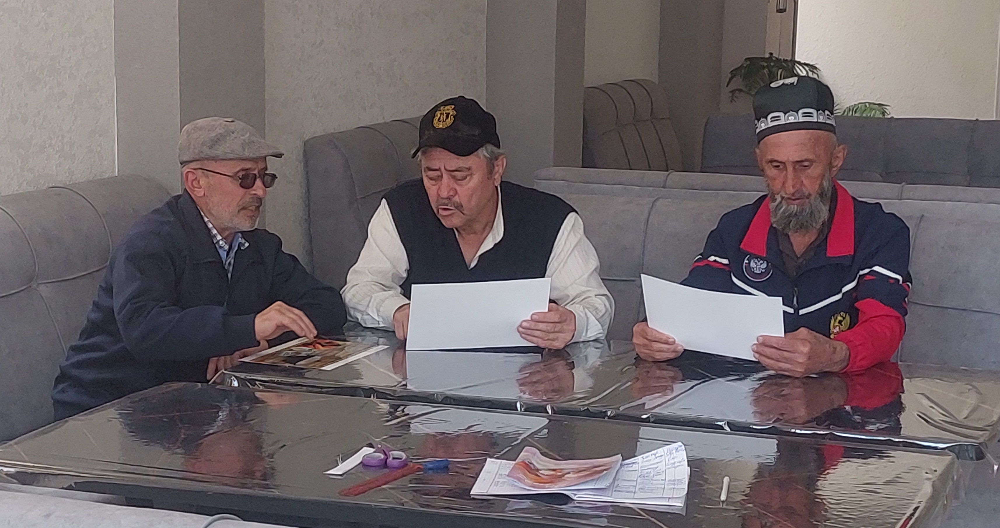
Основные предоставляемые услуги для 50 пожилых людей:
Услуги центра: Центр оказывает социальные услуги для членов 200 малоимущих семей и 50 пожилых людей г. Бохтар.
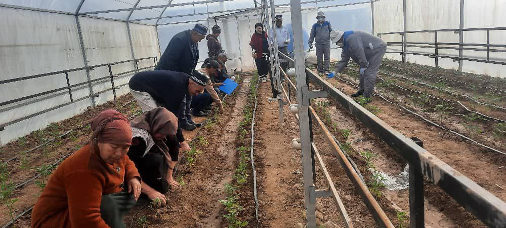
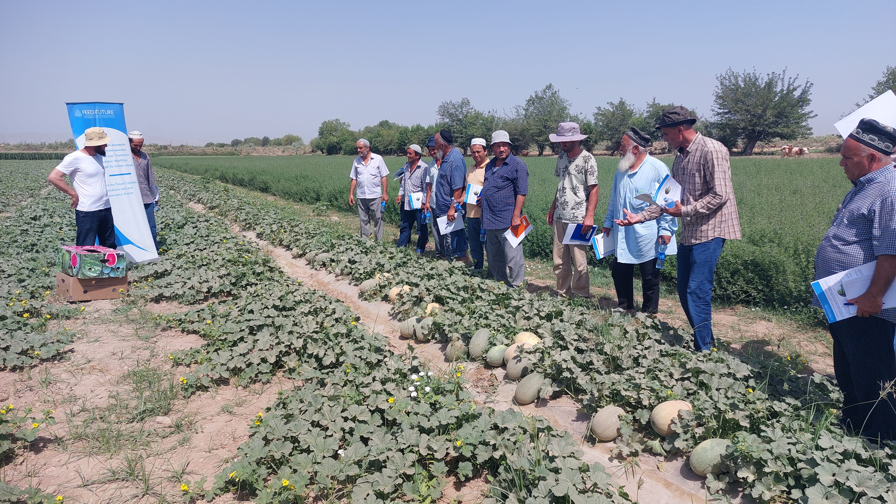
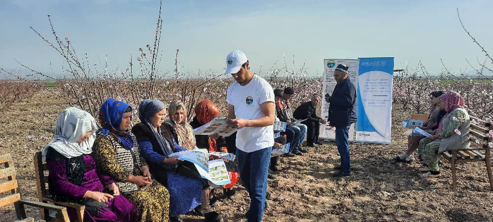
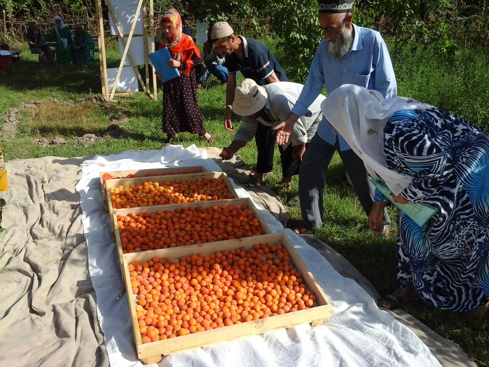
Мобилизация и охват: 8 676 производителей (женщины, молодёжь, фермеры) участвуют в проекте; создано 90 фермерских групп.
Информационные материалы: Разработано 41 500 буклетов, листовок и брошюр; установлено 100 информационных баннеров; создан видеоролик о проекте.
Обучение: Более 150 встреч и тренингов; обучено 200 консультантов для фермеров; каждый участник прошёл 2–3 практических тренинга на полях.
Демо-участки: Создано 90 опытных участков с новыми экологичными методами выращивания; для каждого участка определено место и координаты.
Цифровые инструменты: Введена информационная система у поставщиков; создана сеть WhatsApp-групп для быстрого обмена советами и информацией.
Связи с рынком: Организованы встречи производителей с покупателями и экспортёрами; заключено 250 сделок между фермерами и торговцами.
Партнёры: В проекте участвуют 16 специалистов организации и 35 экспертов из частного сектора.
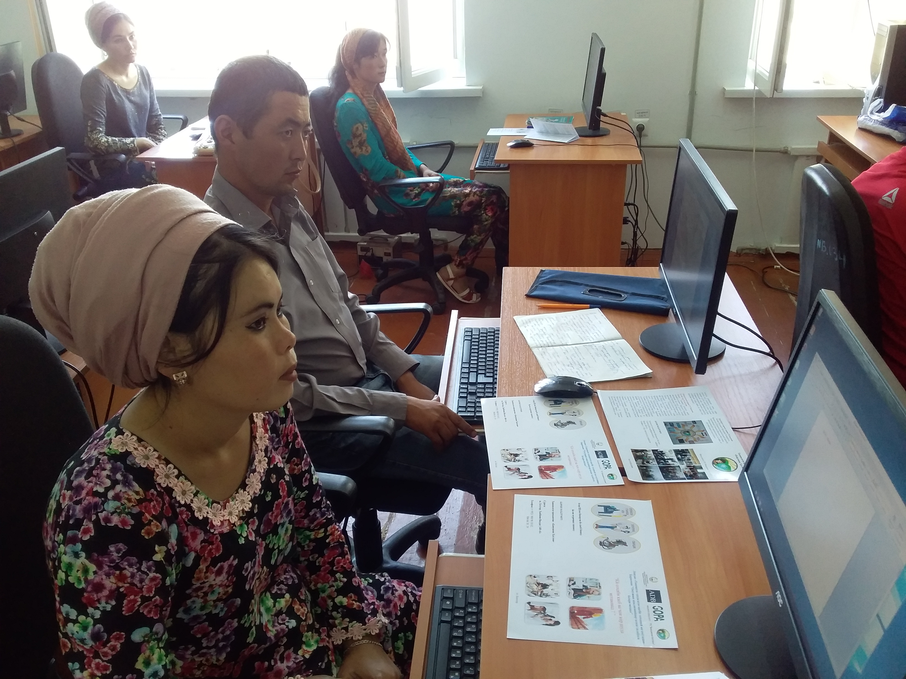
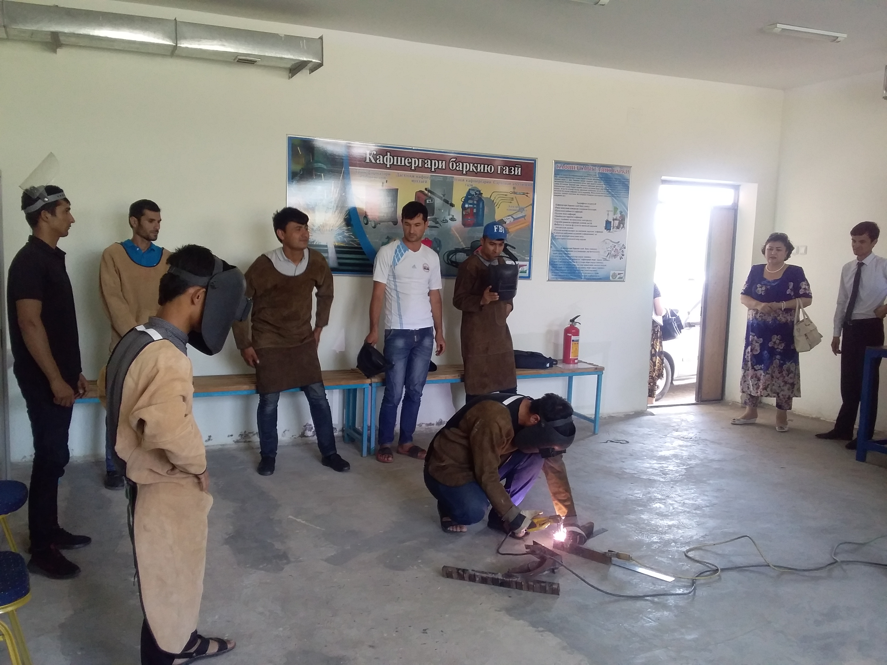
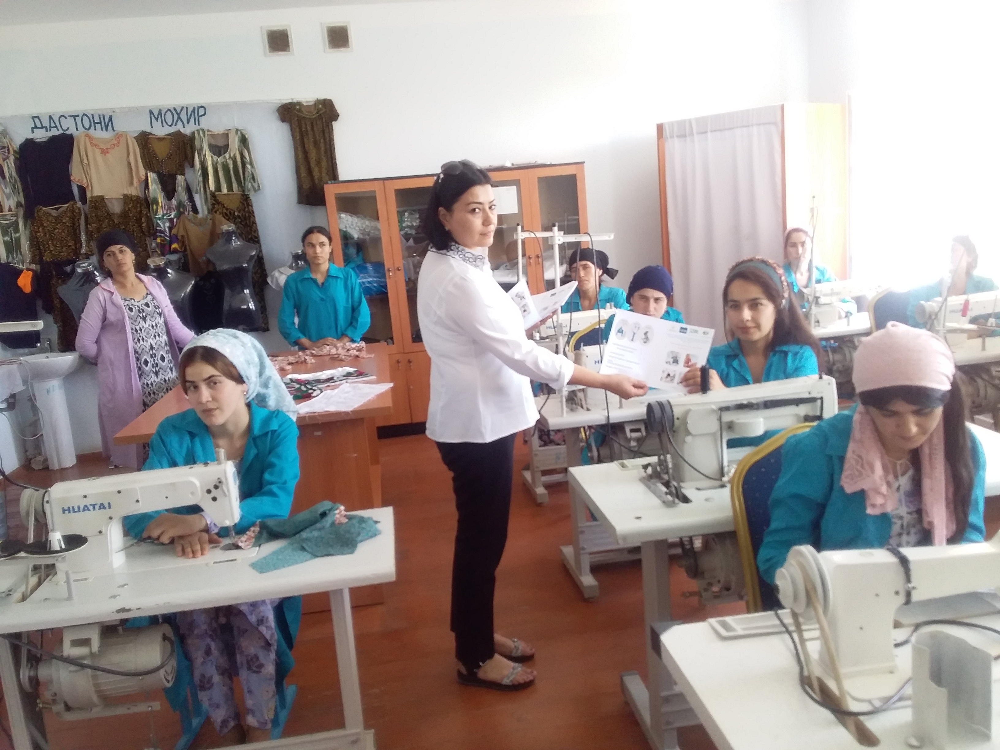

Информационно-коммуникационная кампания: Разработано более 30 видов ИК-материалов (буклеты, лифлеты, брошюры, баннеры, календари, учебные программы); издано и распространено свыше 56 000 экземпляров; создан видеоролик о профкурсах.
Мобилизация и охват: Проведено более 400 встреч с участием 6 000+ активистов; мобилизовано и отобрано 5 391 бенефициар из уязвимых групп (женщины, молодёжь, люди с инвалидностью, трудовые мигранты).
Исследование рынка труда: Проведены социологические исследования и анализ спроса на профессии для содействия трудоустройству выпускников.
Профессиональное обучение: Обучено 5 391 человека по 81 программе: 840 по 20 профессиям с навыками предпринимательства; 2 650 мигрантов и молодёжи по 39 аккредитованным курсам; 1 901 женщина по 22 профессиям для МСБ.
Трудоустройство и бизнес: 3 777 выпускников (70%) трудоустроены в Таджикистане и за рубежом (Россия, Польша, Турция); поддержаны 24 бизнес-плана с грантами и стартовым финансированием.
Партнёрство: Активизировано сотрудничество с органами власти, СМИ, центрами занятости и местными сообществами.
COVID-19: Распространено 6 000+ информационных материалов; передано 10 000+ средств защиты 5 400 бенефициарам.
Команда: 75 специалистов обеспечили управление, обучение и сопровождение бенефициаров.
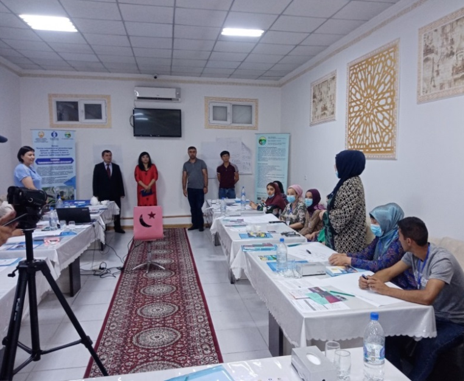
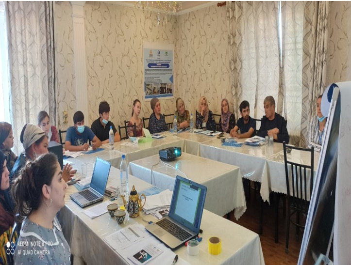
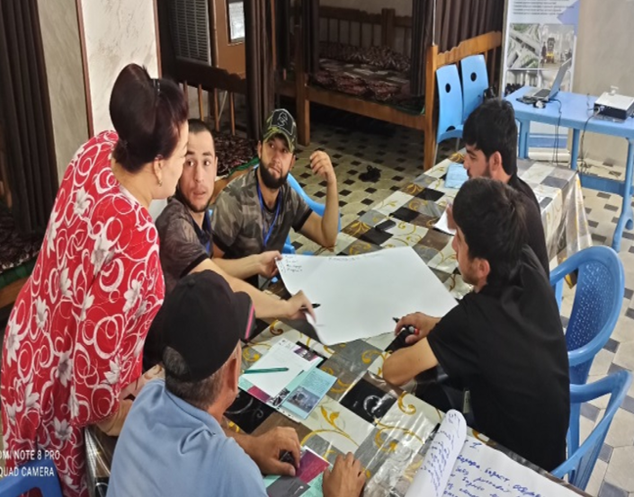
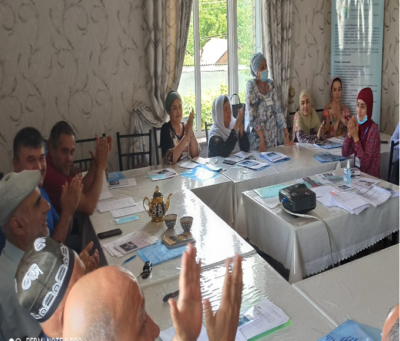
Исследование и мобилизация: Проведены опрос и анкетирование 102 бенефициаров проекта для анализа развития бизнеса и определения уровня знаний.
Организация групп обучения: Создано 7 групп по 15–20 человек для проведения тренингов.
Обучение налогообложению и праву: Проведено 7 трёхдневных тренингов по налогообложению и праву для предпринимателей малого и среднего бизнеса.
Обучение бухгалтерскому учёту и развитию бизнеса: Проведено 7 четырёхдневных курсов по бухгалтерскому учёту, развитию бизнеса и туристическим услугам.
Консультирование и поддержка: Оказано консультирование 102 бенефициарам в разработке бизнес-планов для получения субгрантов (3 000–20 000 USD).
Финансовая поддержка: 80 бенефициаров получили финансирование для реализации бизнес-планов.
Команда проекта: 9 специалистов (менеджер, координатор, финансист, 2 мобилизатора/фасилитатора, 3 тренера ТГУ, 1 бизнес-консультант налоговой инспекции).
Короткие отзывы о сотрудничестве. Логотипы и фото можешь добавить позже.
NIRAS has been partnering with NGO Bonuvoni Khatlon between 2016 and 2018 on improving access to agriculture extension services within the Agriculture Commetcialization Project.Bonuvoni Khatlon was very strong in terms of managing the Farmer Filed School approach as well as selecting best local master trainers. Most of the trainers have successfully graduated the FFS and now continue providing their services to local farmers. Throughout the project, Bonuvoni Khatlon conducted 500 trainings covering 2,500 farmers.
During the implementation PO "Bonuvoni Khatlon" under Task Order #1 facilitated training for 1,416 (214 women, 1,202 men) members of 22 early watermelon FFS groups and for 359 members (77 women, 282 men) of nine grape producer FFS groups. Under Task Order #2 PO "Bonivoni Khatlon" facilitated approximately 3,750 unique farmers for selected four value chain products and under Task Order #3 facilitated one FFD session, which was conducted by Input Suppliers AgroOlam and Neksigol, where trained approximately 3,510 unique farmers: Stone Fruit (Apricots+) Value Chain 360 farmers, Grape Value Chain 270 farmers, Melon Value Chain 1080 farmers, and Early Vegetable Value Chain - 1,800 farmers.
I hereby confirm that the Public Organization "Bonuvoni Khatlon> is our partner in the framework of the implementation of the Market-Responsive lnclusive Training program of the "Strengthening Technical and Vocational Education and Training" Project of tne lVtinistry of Labor, Migration and Employment of the Republic of Tajikistan, funded by the Asian Development Bank and the Govemment of the Republic of rajikistan. The organization successfully manages the grant portfolio of USD396 ,210.0 allocated for the targeted Khatlon region. The total number of beneflciaries is 5 391 which includes vulnerable people, disabled group of people, female and youth as well as returning migrants. These beneficiaries are supposed to be trained on shortterm courses, business skills courses and validated. The main objective and focus is to promote provision of jobs for the trained beneflciaries.
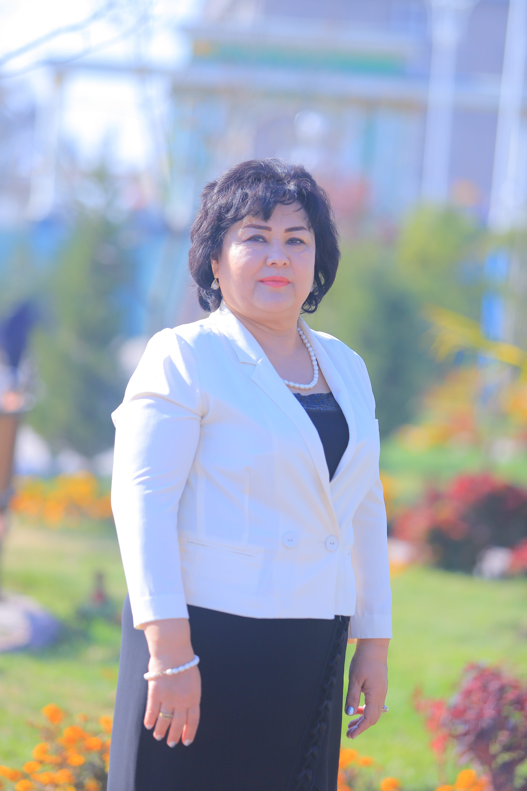
Напишите нам — обсудим сотрудничество и проекты.
Хатлонская область, г. Бохтар
Пр. Вахдат 148 «б»
Также офис в г. Душанбе (мкр. Зарафшон, ул. Б. Хамдам 26/1).